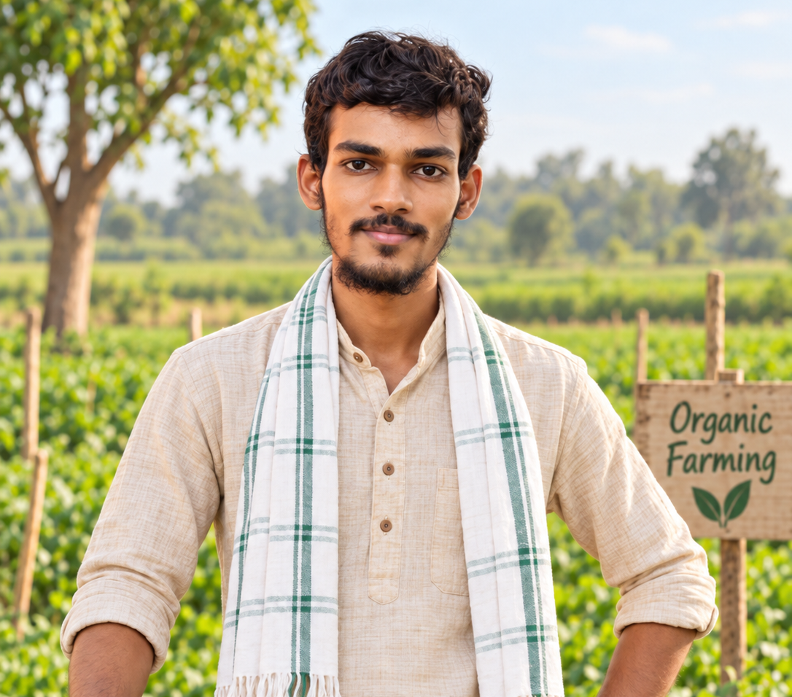

Meet the people behind your food.
Discover the story behind Maaz Farms, our organic farming approach and the people working to bring fresh food directly to your home.

Maaz Farms
At Maaz Farms, our goal is to grow fresh food responsibly, protect the soil and make quality organic produce easier for local families to purchase directly from the farm.
We focus on natural soil care, responsible water management and practical farming methods that help keep the farm productive and sustainable.
Healthy Soil
We use compost, organic matter and crop rotation to support better soil structure and long-term fertility.
Water Smart
Mulching and careful irrigation help reduce unnecessary water loss and support healthier crops.
Natural Crop Care
We focus on preventive and lower-impact pest management methods to support healthier crops and farm biodiversity.
Farming for today and tomorrow.
Our farming approach focuses on freshness, sustainability and a direct connection between the farmer and customer.
Sustainable Farming
Farm resources are managed carefully to reduce waste and protect the land.
Fresh Produce
Fruits and vegetables are selected close to harvest for better freshness.
Farm Direct
Customers can purchase fresh produce directly from Maaz Farms without a long supply chain.